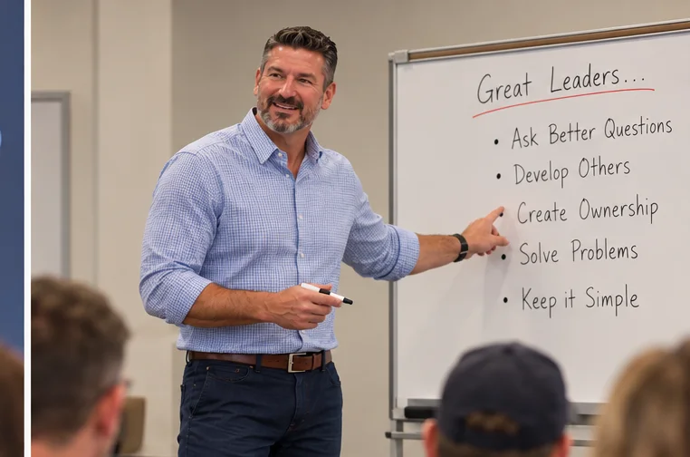
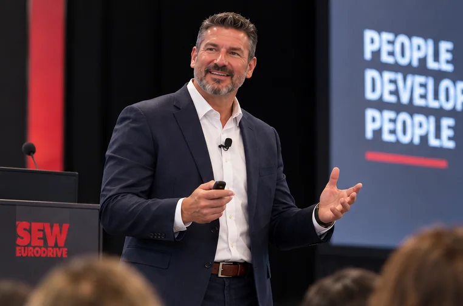

Leadership training for the real work of leading people.
Leadership becomes real in ordinary moments: giving direction, correcting performance, listening to an employee, explaining a difficult decision, or helping someone grow into greater responsibility.
People learn leadership by doing the hard parts.
Leadership is not learned by memorizing a list of qualities. People learn to lead by understanding their responsibility, practicing difficult conversations, examining their decisions, and seeing how their behavior affects the people around them.
These classes use discussion, workplace situations, guided exercises, personal reflection, and practical application. Participants are expected to think about their own leadership rather than study leadership from a distance.
- Teach the work clearly
- Develop the people who lead it
- Practice the conversations that matter

Three classes. Use one, or combine them.
Organizations can use a single class or build a longer development path around the people they are preparing to lead.
Class One: Fundamentals of Leadership
Fundamentals of Leadership is designed for employees preparing to lead and supervisors who are still finding their footing. The class examines what changes when someone becomes responsible for the work and development of other people.
Participants consider the difference between being dependable themselves and creating an environment where other people can succeed. The course addresses credibility, expectations, trust, decision making, accountability, and the daily behavior that causes employees either to rely on a leader or work around one.
Who it is for. New supervisors, team leads, emerging leaders, and employees being considered for future leadership responsibilities.
Sample course outline
- Moving from individual contributor to leader
- Understanding the responsibility that comes with authority
- Building credibility through consistency
- Setting and communicating clear expectations
- Delegating work without abandoning responsibility
- Responding when expectations are not met
- Balancing accountability with respect
- Identifying personal leadership habits that need attention
- Creating an individual leadership action plan
Delivered in person or through live virtual instruction.
Class Two: People Not Products
Most leadership does not happen during major announcements or carefully planned meetings. It happens during the normal workday when priorities change, an employee needs direction, performance begins to slip, or two people are no longer working well together.
People Not Products helps supervisors handle those moments with greater clarity and judgment. Participants work through realistic leadership situations and examine how consistency, follow through, listening, and timely action affect a team, and what it means to lead the people in front of you rather than manage them like output.
Who it is for. Current supervisors, managers, department leaders, and experienced team leads who want to strengthen how they lead employees through everyday work.
Sample course outline
- Establishing priorities when everything feels urgent
- Giving direction people can understand and act on
- Coaching without taking the work back
- Recognizing the difference between a skill problem and a behavior problem
- Addressing performance concerns early
- Handling disagreement without avoiding it or escalating it
- Making fair decisions when circumstances are different
- Following through after a decision is made
Delivered in person or through live virtual instruction.
Class Three: Advanced Leadership
Advanced Leadership is about ownership and accountability, the two things that get harder to hold onto the more authority a person gains. At a certain level it becomes easy to explain away a bad outcome, point at circumstances, or let responsibility quietly settle on someone lower down. This class is for leaders who refuse to do that.
The heart of it is owning a result completely, including the results you did not personally cause. From that ownership comes the harder work of holding the people you lead accountable without going soft or turning harsh. Participants bring their own real situations and work through what it actually takes to stay accountable when it would be easier not to.
Who it is for. Experienced supervisors and managers, leaders who oversee other leaders, and people moving into roles where the outcomes and accountability sit squarely on their desk.
Sample course outline
- Owning outcomes you did not personally cause
- Taking responsibility publicly when something goes wrong
- Holding people accountable without going soft or turning harsh
- Enforcing a standard that is inconvenient to enforce
- Addressing the underperformer you have been avoiding
- Refusing to let responsibility slide down to someone below you
- Staying accountable to yourself when your position shields you from it
- Building a team that owns its work instead of managing blame
Delivered in person or through live virtual instruction.
Organizations may select an individual class or combine several classes into a customized leadership development program built around the people being developed and the situations they actually face.
Bring the conversation to your team.
Jared speaks to teams, leadership groups, and industry audiences about workforce knowledge, leadership development, AI, and the problems organizations are actually wrestling with now. The talks are practical and direct, built on real experience rather than trends, and shaped to the room.
AI and the Workforce Paradox
Everyone is talking about what AI will replace. The harder question is what it cannot, and why the human work of leading people matters more, not less, as the tools get smarter.
When the Last Machinist Walks Out the Door
The skilled trades are retiring faster than they are being replaced, and decades of hard won knowledge are leaving with them. What it costs, and what organizations can still do about it before the door closes.
Developing Tomorrow’s Leaders Today
Leadership benches do not build themselves. A practical look at how organizations identify, grow, and keep the people who will carry the work forward before there is a hole to fill.
The Power of Forgiveness and Grace
Every workplace runs on people, and people make mistakes, hold grudges, and carry things that quietly wear a team down. A grounded look at what forgiveness and grace actually do for a culture.
Hear how he thinks: the Challenging Leadership podcast.
Jared hosts Challenging Leadership with organizational psychologist Stephen Mather, taking apart the assumptions, conventions, and myths around leadership and management. It is a useful place to hear how he thinks before you book him.

The tools are changing. The responsibility is not.
Jared also serves on the Strategic AI Advisory Panel for Furman University’s Center for Innovative Leadership. That work informs leadership sessions on AI adoption, workforce change, judgment, and the responsibility leaders carry when new technology moves faster than policy or culture.
Build a program around your people.
Tell me who you are developing and what they are up against. We can decide whether one class fits, a combined program makes more sense, or the problem needs something more specific.